In this assignment, I implemented a path tracer that generated realistic images by simulating how light interacted with objects in a scene. I started by generating camera rays and implementing ray intersections with triangles and spheres, then used a BVH to accelerate intersection tests. I also implemented direct lighting with hemisphere and importance sampling, global illumination with recursive ray tracing and Russian Roulette, and adaptive sampling to reduce unnecessary computation.
One of the most interesting things I learned was how much indirect illumination contributed to the realism of a scene. Even just a few additional light bounces introduced color bleeding and softened shadows significantly. I also learned how important it is to speed up the rendering process. Overall, This assignment helped me understand how path tracing works and why rendering realistic images require so much careful and efficient computation.
I first mapped the normalized image coordinates (x,y) to the virtual sensor in camera space. Since the sensor lies at z=-1, I used tan(hFov/2) and tan(vFov/2) to determine its boundaries, as the tangent of half the field of view gives the distance from the sensor's center to its edge. Specifically, I calculated the sensor coordinates using: \[ x_c=(2x-1)\tan\left(\frac{hFov\cdot\pi}{360}\right),\quad y_c=(2y-1)\tan\left(\frac{vFov\cdot\pi}{360}\right). \] I then constructed a ray from the camera origin toward \((x_c,y_c,-1)\) and normalized its direction. Finally, I rotated the direction into world space using c2w and set the ray origin to pos, which the camera's world space position.
For each of the ns_aa samples, I used gridSampler->get_sample() to generate a random offset within the pixel, then added it to (x,y). I divided the resulting coordinates by the image width and height to normalize them to [0,1]. I then generated a camera ray through each sampled point and called est_radiance_global_illumination() to estimate its radiance. Finally, I averaged the accumulated radiance over all samples: \[ L_{\text{pixel}}=\frac{1}{ns_{aa}}\sum_{i=1}^{ns_{aa}}L(r_i) \] and stored the result in sampleBuffer. This approximates the average radiance over the pixel using Monte Carlo sampling.
Below are visualizations of the camera ray directions and surface normals:
|
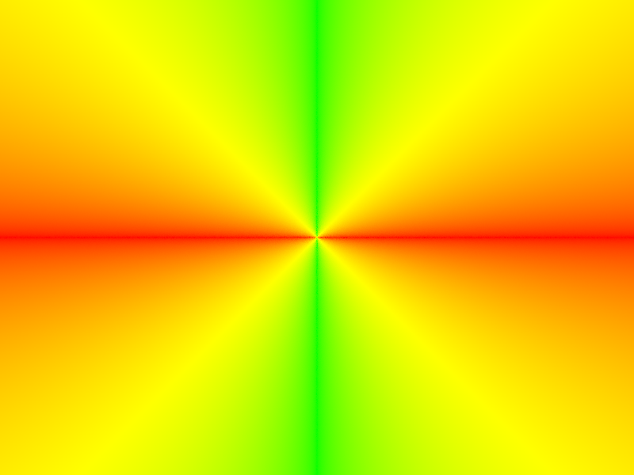 |
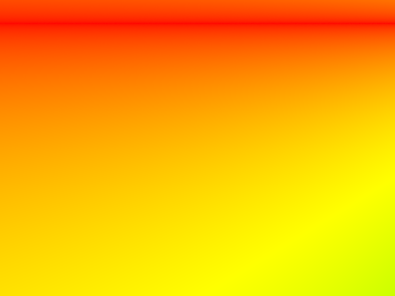 |
I implemented ray-triangle intersection using the Möller-Trumbore algorithm. I first computed two edge vectors of the triangle and used cross and dot products to solve for the intersection distance \(t\) and barycentric coordinates \(u\) and \(v\). If the determinant is close to zero, the ray is parallel to the triangle's plane, so I return false. I then check whether \(u\geq0\), \(v\geq0\), and \(u+v\leq1\), which ensures that the intersection lies inside the triangle. I also check that \(t\) is within the ray's min_t and max_t bounds. If the intersection is valid, I update max_t to keep track of the closest intersection found so far. For intersect(), I also interpolate the three vertex normals using the barycentric weights \(1-u-v\), \(u\), and \(v\), and normalize the result. Finally, I stored the intersection distance, interpolated normal, primitive pointer, and BSDF in the intersection structure.
|
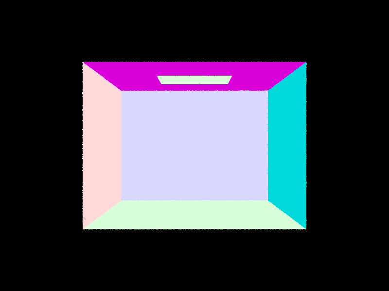 |
I substituted the ray equation \(p(t)=o+td\) into the sphere equation \(\|p(t)-c\|^2=R^2\), which gives a quadratic equation in \(t\). I made sure to check the discriminant to determine whether an intersection exists. If it is nonnegative, I calculated both roots and selected the smaller one that lies within the ray's min_t and max_t bounds. I then updated max_t to the intersection distance. For intersect(), I also computed the hit point using \(p=o+td\) and calculated the surface normal by normalizing the vector from the sphere center to the hit point. Like in task 3, I stored the intersection distance, normal, primitive pointer, and BSDF in the intersection structure.
|
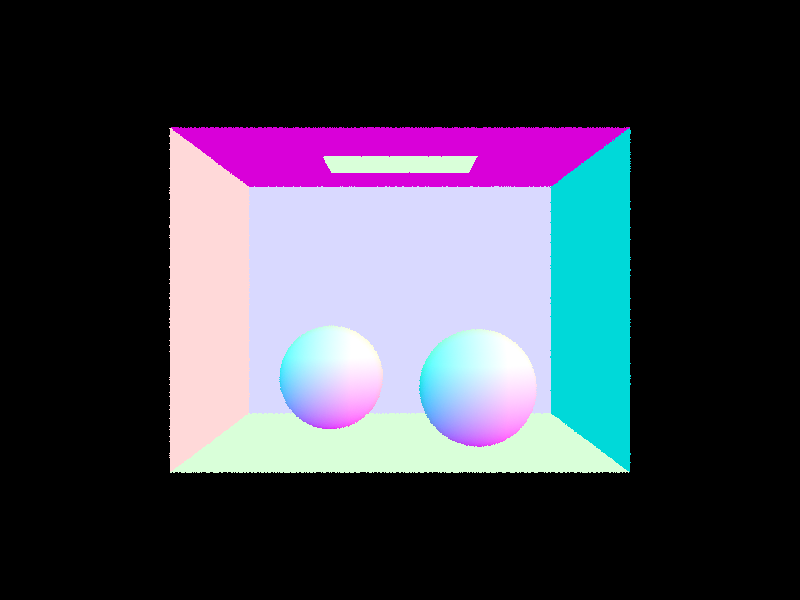 |
|
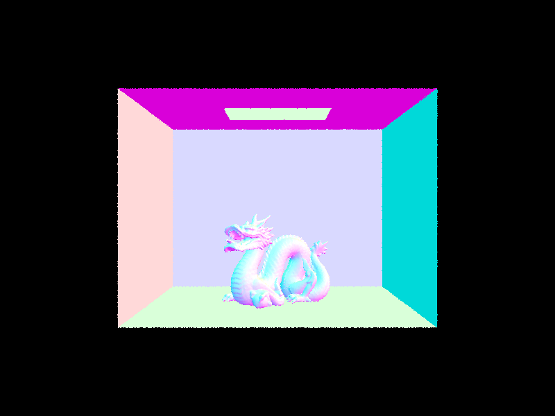 |
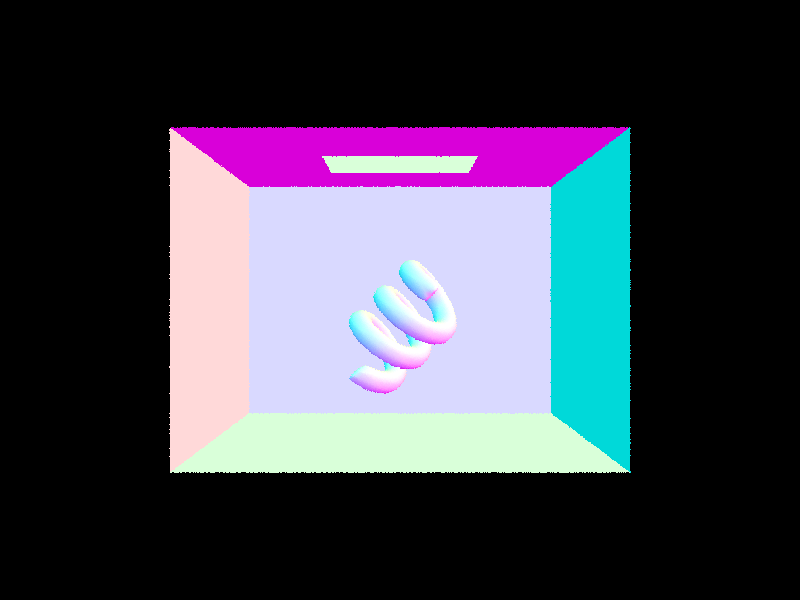 |
|
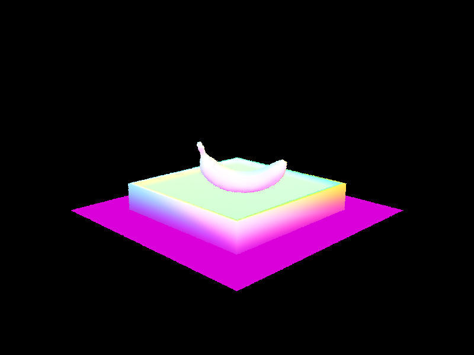 |
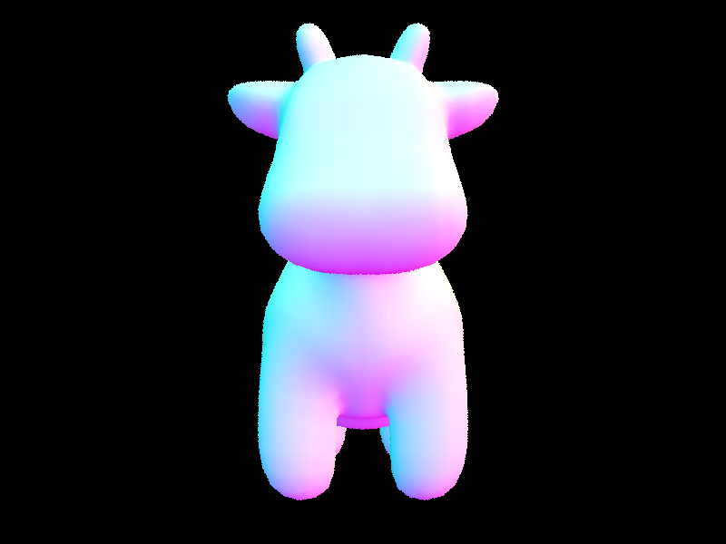 |
I constructed the BVH recursively by first computing a bounding box that contains all primitives in the current range. If the number of primitives is at most max_leaf_size, I create a leaf node and store the start and end iterators. Otherwise, I choose the longest axis of the bounding box as the splitting axis, since dividing along this direction helps separate the primitives spatially. I use the midpoint of this axis as the splitting point and partition the primitives based on the centroids of their bounding boxes. If all primitives fall on one side, I instead split at the median centroid to avoid infinite recursion. Finally, I recursively construct the left and right child nodes using the two resulting ranges.
|
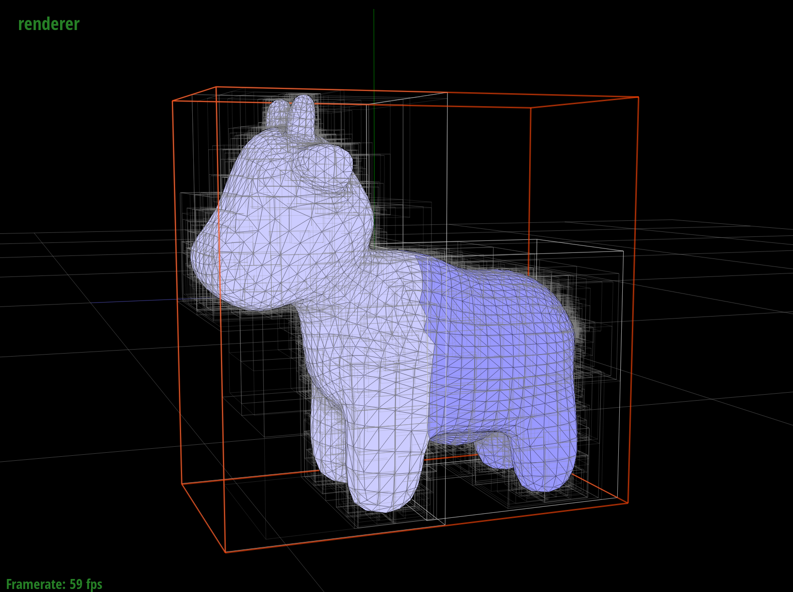 |
I implemented bounding box intersection using the slab method. For each of the three axes, I calculated the two t-values where the ray intersects the bounding planes of the box. I swapped these values if necessary so that tNear is always smaller than tFar. I then updated t0 to the maximum of the current t0 and tNear, and t1 to the minimum of the current t1 and tFar. This finds the overlapping interval where the ray is inside the box along all three axes. If t0 exceeds t1 at any point, I return false since no valid intersection exists. I also handled rays parallel to an axis by checking whether the ray origin lies within that axis's bounds, avoiding division by zero. If all three axes have a valid overlapping interval, I return true.
For each node I first check whether the ray intersects its bounding box within the valid min_t and max_t range. If not, I immediately return false and skip the entire subtree. If the node is a leaf, I iterate through its primitives and test each one for intersection. Otherwise, I recursively check both child nodes. For has_intersection(), I return true as soon as any intersection is found. For intersect(), I continue checking both subtrees to find the closest intersection. Each primitive's intersection function updates the ray's max_t and the intersection information when a closer hit is found, so the final result stores the nearest intersection.
|
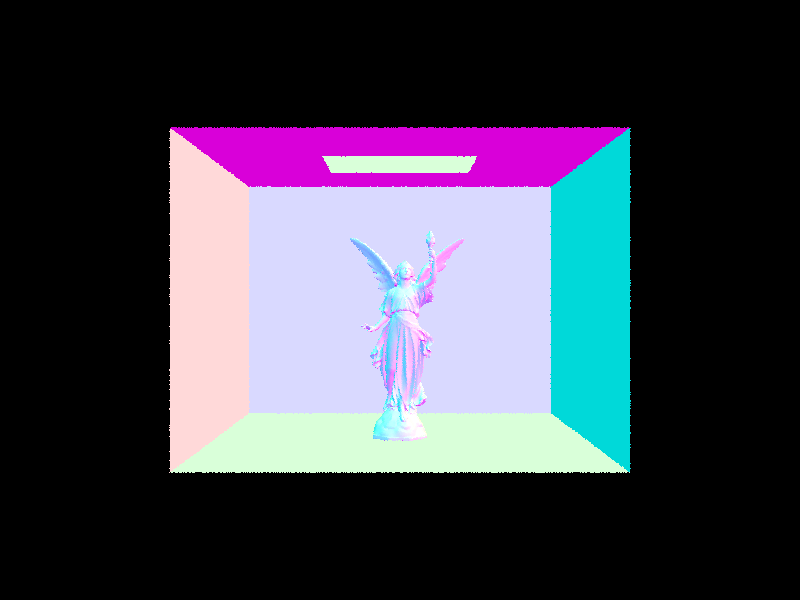 |
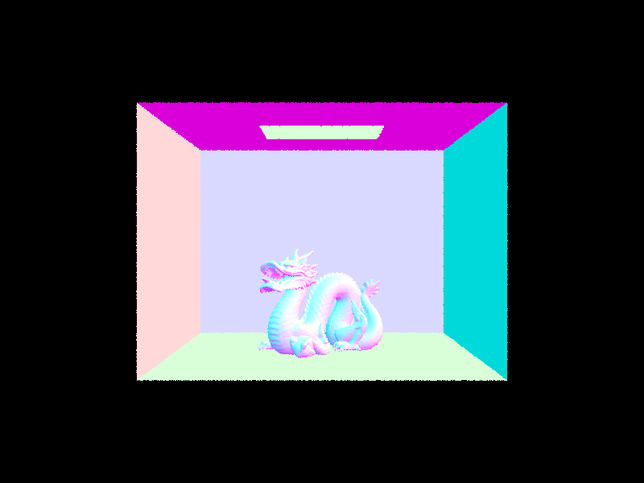 |
|
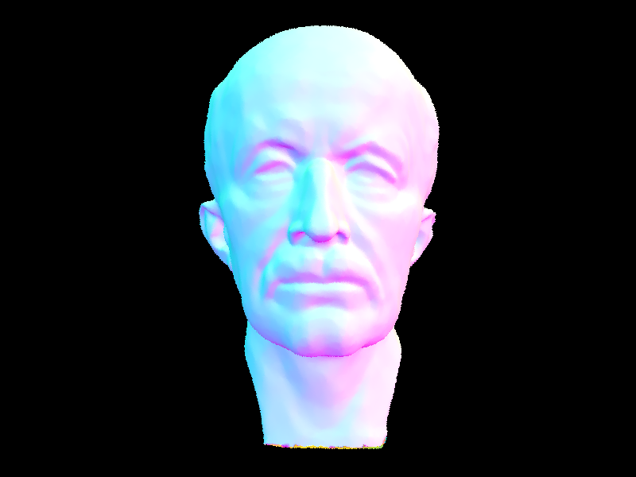 |
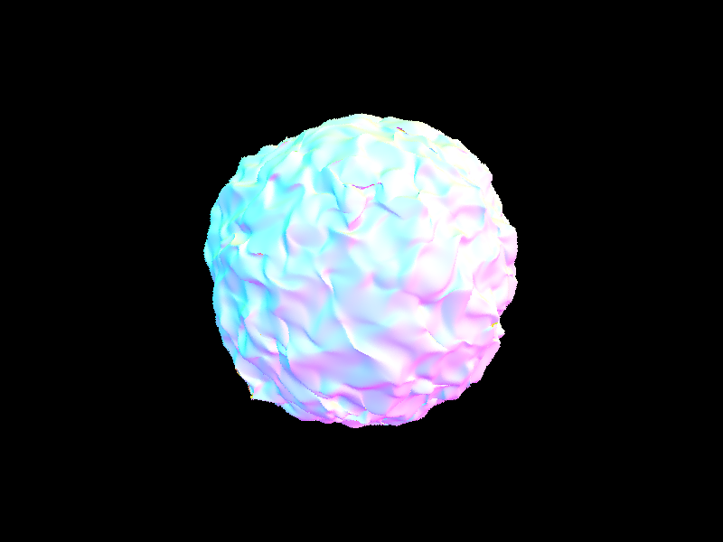 |
The table below shows the rendering times for three scenes with and without BVH acceleration, using 8 threads and a resolution of 800x600. BVH acceleration significantly reduced rendering times across all three scenes. The cow scene improved from 1.6597s to 0.0213s (77.9x), the banana scene from 0.6225s to 0.0172s (36.2x), and the Max Planck scene from 16.9499s to 0.0308s (550.3x). The improvement was especially noticeable for Max Planck, which contains over 50,000 primitives. Without BVH, each ray potentially needs to check every primitive, while BVH traversal skips entire groups of primitives whose bounding boxes are not intersected. This greatly reduces the number of intersection tests so it makes rendering complex scenes much faster.
| Scene | Primitives | Without BVH (s) | With BVH (s) | Speedup |
|---|---|---|---|---|
| Cow | 5,856 | 1.6597 | 0.0213 | 77.9x |
| Banana | 2,458 | 0.6225 | 0.0172 | 36.2x |
| Max Planck | 50,801 | 16.9499 | 0.0308 | 550.3x |
I implemented the diffuse BSDF using the Lambertian reflection model, which assumes that incoming light is scattered uniformly in all outgoing directions. In DiffuseBSDF::f(), I return the material's reflectance divided by pi, which ensures energy conservation. Since the diffuse BRDF is constant, it does not depend on the incoming or outgoing directions. In DiffuseBSDF::sample_f(), I use cosine-weighted hemisphere sampling to generate an incoming direction wi and its corresponding probability density pdf. I then call f(wo, *wi) to return the BSDF value for the sampled direction.
To implement this, I obtained the emission of the intersected surface using isect.bsdf->get_emission(). This returns the radiance emitted directly by the surface, which is nonzero for light sources and zero for non-emissive materials. I updated est_radiance_global_illumination to return zero_bounce_radiance instead of normal shading. As a result, only directly visible light sources appear illuminated, as shown in the image below.
|
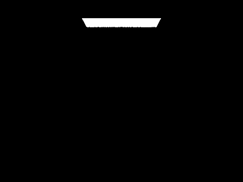 |
For each intersection point, I randomly sampled incoming directions in the local hemisphere and transform them into world coordinates to trace shadow rays. If a ray intersected an emissive surface, I calculated its contribution using the emitted radiance, the surface BSDF, and the cosine of the incident angle. Since the directions were sampled uniformly, I multiplied each contribution by 2*pi, the inverse of the sampling PDF. I then averaged the contributions over all samples to estimate the direct illumination. Finally, I updated one_bounce_radiance to call the hemisphere sampling function and added its result to the zero-bounce radiance in est_radiance_global_illumination.
|
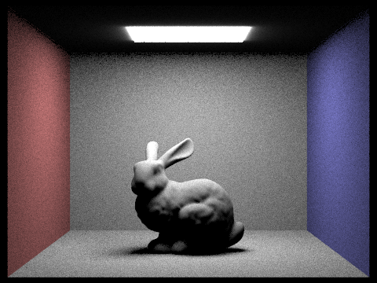 |
Here,for each light, I sampled a direction toward the light and obtain the incoming radiance, distance, and PDF. Then, I transformed the direction into local coordinates and skipped samples that are below the surface. To check visibility, I casted a shadow ray toward the light, limiting its maximum distance to avoid intersections beyond the light source. If the ray is not blocked, I calculate the contribution using the incoming radiance, BSDF value, cosine factor, and inverse PDF. I averaged the samples for each light and sum their contributions. For point lights, I only took one sample since all samples would be identical. This reduced noise compared to uniform hemisphere sampling because more samples contributed to useful lighting information.
|
|
| Uniform Hemisphere Sampling | Light Sampling |
|---|---|
|
|
|
|
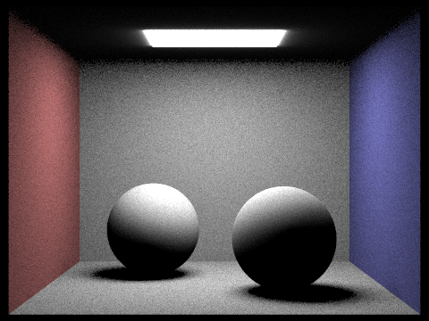 |
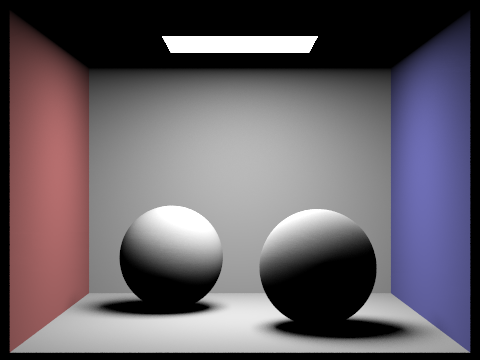 |
Comparing uniform hemisphere sampling and importance sampling using the same scene, resolution, and sample counts, I noticed that uniform hemisphere sampling produced much noisier results, especially in soft shadows and darker regions. This is because many randomly sampled directions did not intersect a light source, so those samples contribute nothing to the illumination estimate. In contrast, importance sampling directly samples the light sources, making each sample more likely to contribute useful information. With the same number of samples, the importance sampling renders had much less noise, especially around the shadows. This is because fewer samples were wasted in directions that missed the lights.
|
1 Light Ray |
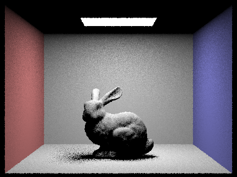 4 Light Rays |
|
16 Light Rays |
64 Light Rays |
With only 1 light ray, the shadows were very noisy, especially around the penumbra where the light is partially blocked. At 4 light rays, the noise was reduced slightly, but the shadow boundaries were still grainy. With 16 light rays, the transitions between illuminated and shadowed regions became smoother. At 64 light rays, the soft shadows appeared much more consistent, with significantly less noise. This happened because more samples provide a more accurate estimate of the fraction of the area light visible from each surface point. Since Monte Carlo variance decreases approximately as 1/N, increasing the number of light rays improves image quality, although it also increases rendering time.
Global illumination builds on direct lighting by allowing rays to bounce between surfaces. For each intersection, I calculated the direct illumination and used the BSDF to sample a new incoming direction. I then transformed this direction from local to world coordinates and trace another ray with its depth decreased by one. If the new ray hits a surface, I recursively computed its radiance and weight the result by the BSDF value, cosine term, and inverse sampling PDF. This process continued until the ray reaches the maximum bounce depth or misses the scene. Depending on isAccumBounces, I either accumulated the contributions from all bounces or return only the contribution from the specified bounce.
Instead of always tracing rays until they reach the maximum bounce depth, I added Russian Roulette to randomly terminate paths and reduce unnecessary computation. After the first indirect bounce, each ray has a 65% probability of continuing and a 35% probability of terminating. I used coin_flip to decide whether to continue tracing, and divided the radiance contribution of surviving paths by 0.65 to compensate for the paths that were terminated. This kept the expected contribution of each bounce unchanged while reducing the number of rays traced. The recursion still stopped when the ray misses the scene or reaches max_ray_depth.
|
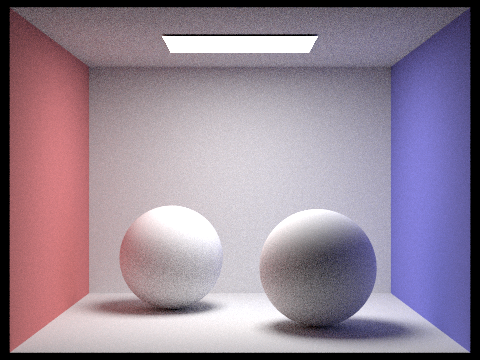 |
|
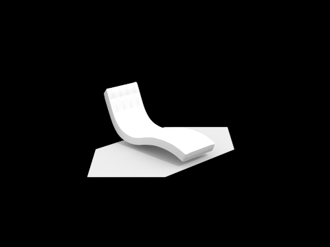 bench.dae |
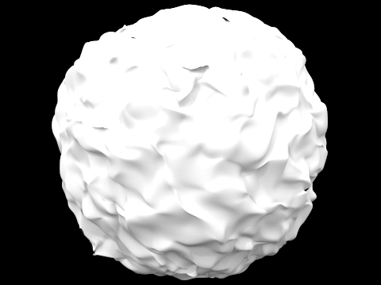 blob.dae |
|
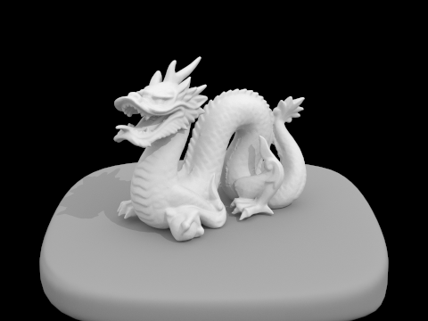 dragon.dae |
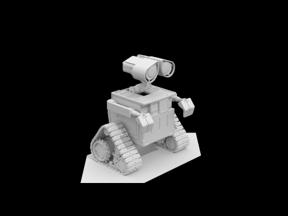 wall-e.dae |
|
Direct illumination only |
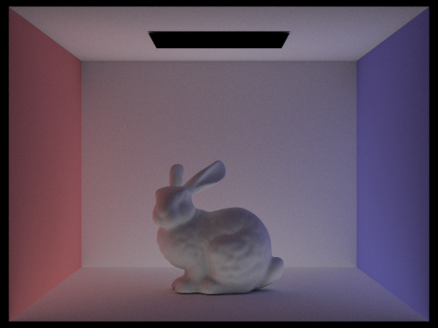 Indirect illumination only |
The direct illumination render showed the bunny and walls lit by the light source, but the shadows remained relatively dark. In contrast, the indirect illumination render showed light reflected between surfaces, including color bleeding from the red and blue walls. Although the indirect contribution was dimmer, it helped illuminate shadowed regions and made the combined lighting appear more natural.
| Type | m=0 | m=1 | m=2 | m=3 | m=4 | m=5 |
|---|---|---|---|---|---|---|
| Individual | 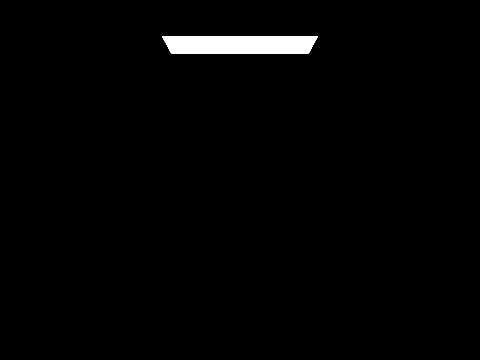 |
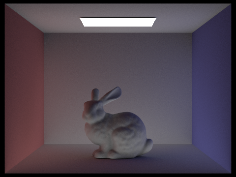 |
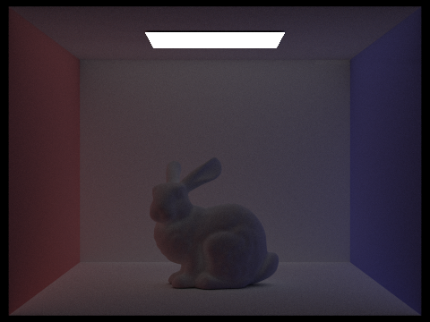 |
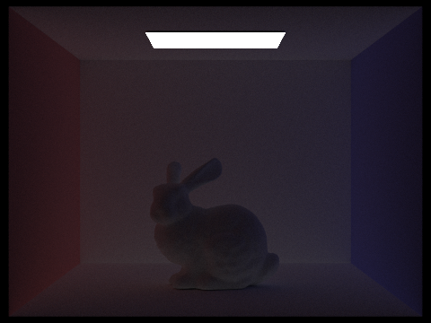 |
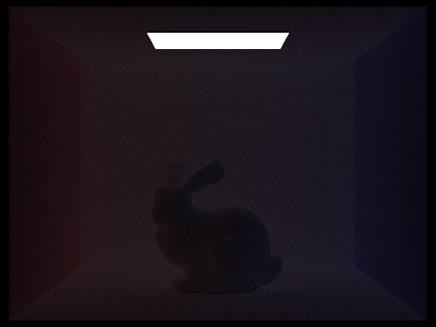 |
|
| Accumulated | 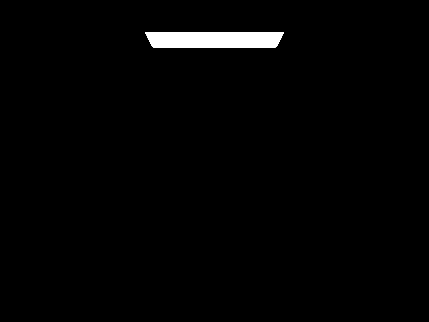 |
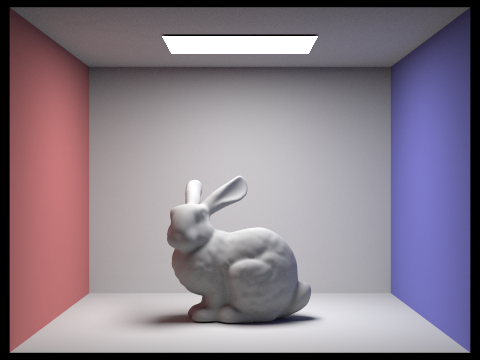 |
In the unaccumulated renders, each image showed only the contribution from a particular bounce, apart from the directly visible light source. The second and third bounces were much dimmer than the first, and the contributions became progressively weaker at depths 4 and 5. In contrast, the accumulated renders combined the contributions from all previous bounces, so the bunny and surrounding surfaces became brighter as the maximum ray depth increased. The differences between depths 4 and 5 were relatively small, as most of the visible illumination came from the first few bounces.
At m=0, only the light source was visible, while m=1 showed direct illumination with dark shadows. The second bounce introduced indirect lighting and color bleeding from the red and blue walls, while the third bounce further softened the shadows. Compared to basic rasterization, which primarily captured direct lighting, these additional bounces simulated indirect illumination and color bleeding, making the scene more realistic.
|
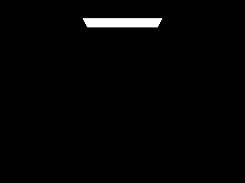 m=0 |
m=1 |
m=2 |
|
m=3 |
m=4 |
m=100 |
With a maximum ray depth of 0, only directly visible emissive surfaces contributed to the image. At depth 1, direct illumination became visible, while higher depths introduce indirect lighting and color bleeding as rays bounce between surfaces. The scene gradually became more naturally illuminated as the maximum depth increases. At depth 100, Russian Roulette allows paths to terminate probabilistically rather than tracing every ray through all 100 bounces, reducing computation.
|
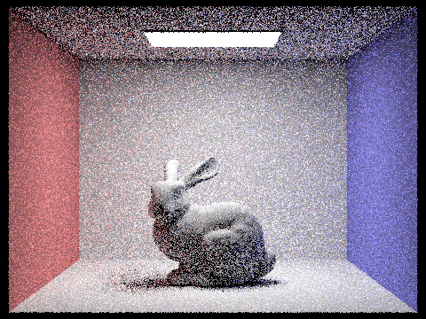 1 sample per pixel |
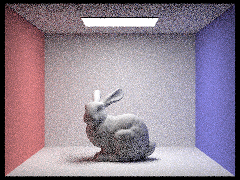 2 samples per pixel |
4 samples per pixel |
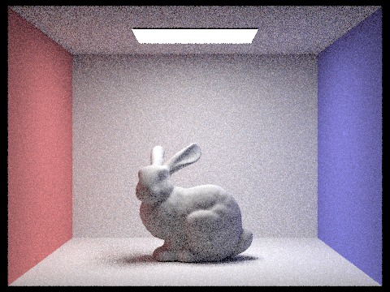 8 samples per pixel |
|
16 samples per pixel |
64 samples per pixel |
1024 samples per pixel |
At lower sample rates, the rendered images contained more noise, especially in regions with indirect illumination and soft shadows. Increasing the number of samples per pixel gradually reduced this noise and made the lighting more consistent across surfaces as the random variations between samples were averaged out. The improvement became less noticeable at higher sample counts, even though rendering time continues to increase.
I implemented adaptive sampling by tracking the sum and squared sum of each pixel's sample illuminance. After every batch of samples, I calculated the mean and variance and used them to estimate a 95% confidence interval. If the interval's half-width was less than 5% of the mean, I stopped sampling that pixel early. Otherwise, I continued until the maximum sample count was reached. I also stored the actual sample count for each pixel to generate the sampling rate visualization.
|
CBbunny: Rendered image |
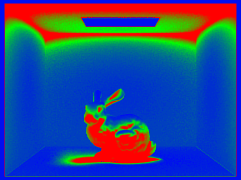 CBbunny: Sampling rate |
|
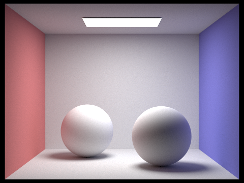 CBspheres: Rendered image |
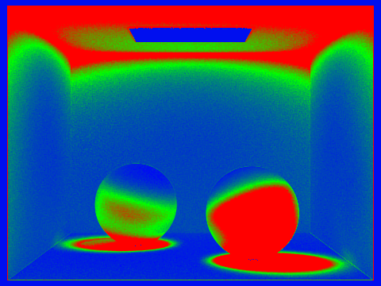 CBspheres: Sampling rate |
Here CBbunny and CBspheres were rendered with 2048 samples per pixel, 1 sample per light, and a maximum ray depth of 5. In both scenes, the sampling rate images showed that smooth, evenly lit surfaces (like the walls and the floor) required fewer samples, while shadowed regions and areas with more complex lighting required more. For example in CBbunny, the detailed geometry of the bunny had higher sampling rates. Similarly, in CBspheres, the shadows beneath the spheres and the darker regions on their surfaces required more samples. This makes sense since pixels with more variation need more samples to get a stable estimate, while pixels with consistent lighting can stop earlier.